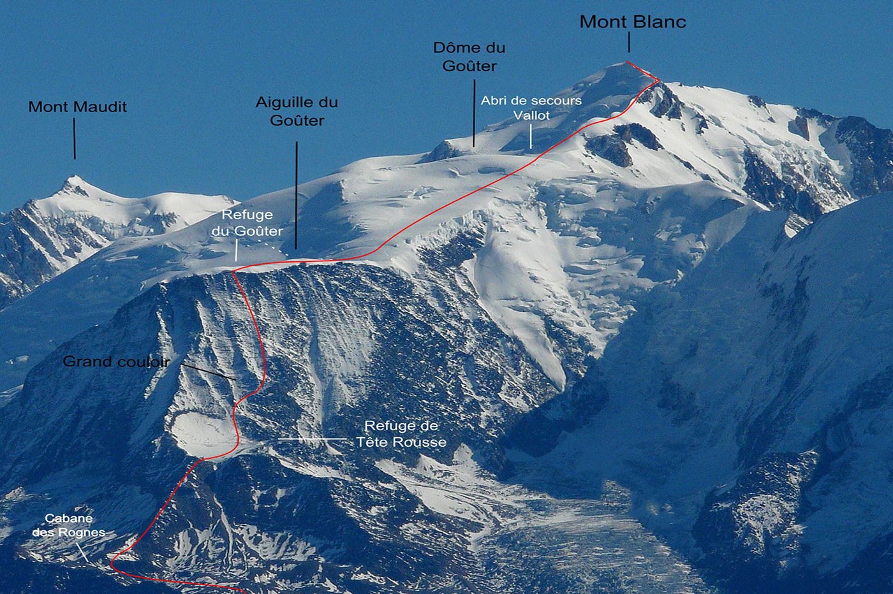
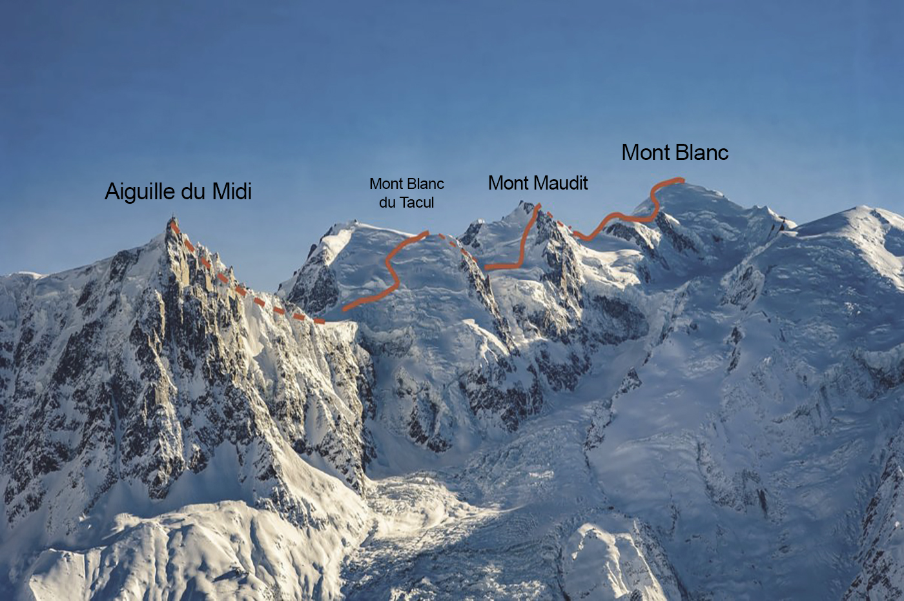
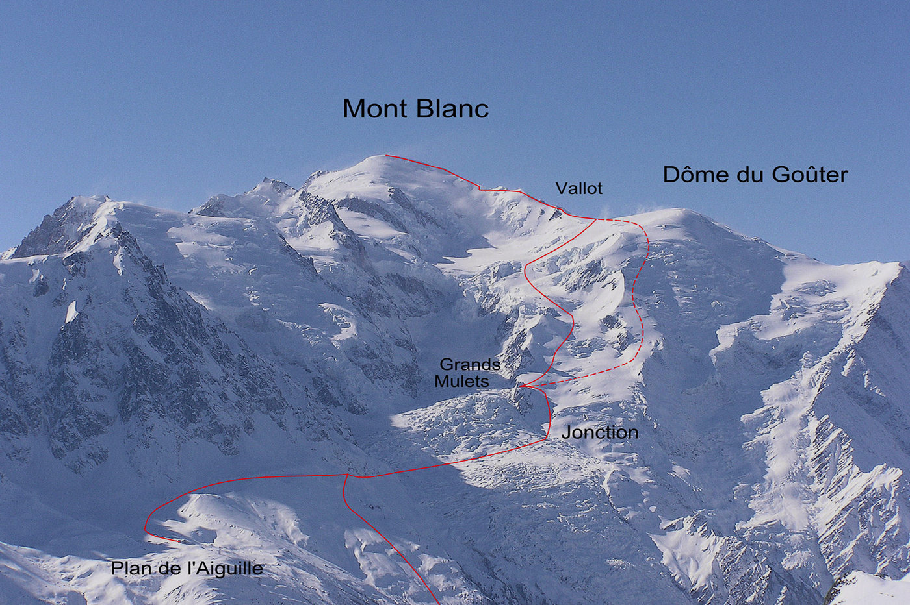

Mont Blanc
DECOUVREZ LE PLUS HAUT SOMMET D'EUROPE
LA VOIE "NORMALE", PAR LE GOÛTER
C’est l’itinéraire qui vient spontanément à l’esprit de l’aspirant au sommet du toit des Alpes. Techniquement raisonnable, collectivement prisé, il n’en demeure pas moins une ascension en haute montagne avec sa panoplie de risques objectifs, amplifiés par la fréquentation de la voie, et les contraintes inhérentes à l’altitude.
LES 3 MONTS, DEPUIS L'AIGUILLE DU MIDI
Progressivement "les 3 monts" se sont imposés comme la voie normale chamoniarde, au succès similaire à l’itinéraire saint-gervolain par le Goûter. Atouts nombreux : un premier jour calme, un refuge où il fait bon vivre et un cheminement de toute beauté, logiquement découpé. Mais attention à la seconde journée très physique, au degré technique un cran au-dessus et aux conditions de neige capricieuses.
LES GRANDS MULETS, LA VOIE DES PIONNIERS
Ce que les trois monts ont gagné en fréquentation ces dernières décennies, les Grands Mulets l’ont perdu (sauf au printemps avec le ski de montagne qui préfère cet itinéraire). La faute aux crevasses et aux séracs, pourtant valables ailleurs, et aux 1800 de dénivelés positifs lors du summit push. Mais d'un autre côté, on y sera plus tranquille pour goûter à l’ambiance sauvage de cette voie historique.
Source : alpinemag.fr